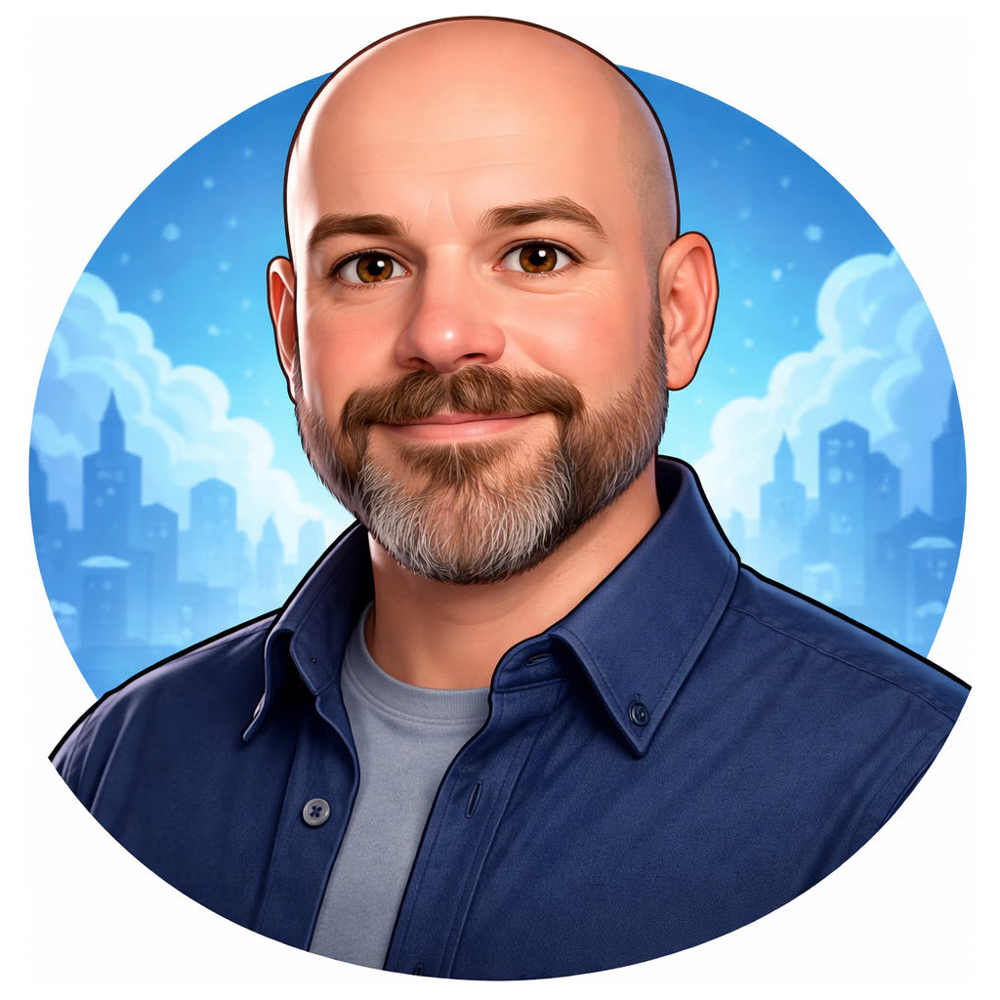

20+ years turning business requirements into working systems across healthcare, government, utilities and financial services. Model-first by habit — the ERD and the UML come before the implementation. And I never stopped building, so the design arrives with an estimate behind it that reflects what it actually takes.
Systems Analyst at Alberta Health Services, the Y.M.C.A., Alberta SPCA and Dasilva Group. Requirements elicited from the people who do the work, modelled, documented, and verified against what the business asked for.
Translating solution requirements into technical architecture. Domain-driven and data-model-first design, with the data model treated as the architecture rather than as documentation produced afterwards.
Twenty years of C# and .NET across web, desktop and services — ASP.NET Core and MVC, Web API, Entity Framework, WPF. Microservices with asynchronous service-to-service calls.
Seventeen years on SQL Server. Relational schema design, query and index optimization, data warehouse design, and the reporting stack that sits on top of it.
Daily hands-on use of Claude Code for real implementation work rather than autocomplete, plus a retrieval-augmented generation pipeline built in Python on PostgreSQL/pgvector.
Built and deployed CI/CD pipelines across multi-functional teams. Agile and Kanban delivery, and deployment validation under ITIL controls in regulated environments.
Most of my career has been software running inside a customer's or employer's own infrastructure rather than shared multi-tenant cloud — including hands-on installer and packaging work for a large enterprise product.
OWASP review across codebases, static analysis tooling, and a bug bounty programme initiated with an external vendor. Security as a development practice, not a separate team.
Proficy, a mature enterprise WPF application of more than a million lines, needed internationalization — hard-coded strings throughout, built by multiple teams each with its own conventions, plus satellite groups in other departments who would have to adopt whatever came out of it. No guidance existed for a codebase of that size and shape. I researched the approach from scratch, authored the standard GE adopted, and built the tooling 100+ developers globally used to apply it. Every team involved sat outside any reporting line of mine.
Founding developer and platform architect for a distributed data analysis and cybersecurity monitoring platform — architecture spanning ingestion, big data processing and alerting, on a platform handling 10M+ security events daily. Built the ELK Stack management UI and a machine-learning anomaly detection pipeline using a supervised classifier, capturing malicious behaviour within one to five minutes.
Operational support for a 300+ server production environment holding 4+ PB of user data, including the on-call rotation and post-incident reviews. Architected the centralized ELK monitoring platform through a v2.0 redesign carried into production. Initiated and championed mapping the restart dependency order — roughly 250 interdependent servers whose startup sequence had never been documented, making every patch reboot a firefighting exercise. The team traced the graph; the result was a runbook that replaced ad-hoc recovery with a repeatable procedure.
Requirements gathered through client interviews and stakeholder meetings across a large multi-organizational health system. Built and maintained system and application-integration documentation as the estate changed, and validated every application and database deployment against ITIL requirements. Analyzed reporting load on the transactional system and separated reporting from the entry database — a finding that came from watching the data, not from a requirements workshop. Earlier, at EBA Engineering, I converted an ERP estate into Oracle and built the C#/SSIS ETL that took a twelve-hour processing step to thirty minutes.
Found an Azure platform defect in which a deployed artifact was deleted once it had been viewed, breaking the disaster-recovery design in our delivery pipeline. Microsoft's first-line answer was to rebuild and redeploy. I rejected it — a rebuild on a different build machine does not guarantee the same artifact, and a recovery plan resting on that restores something resembling production rather than production. The defect was Azure-wide and was eventually fixed. Also sat on the Common Engineering System advisory group, setting cross-team standards adopted organization-wide.
I have never been a people manager — no direct reports, no headcount, no performance reviews. What I have is the other thing: authoring a standard that 100+ developers across teams I had no authority over chose to adopt, and a seat on the Common Engineering System advisory group at WorkSafeBC, which set engineering standards adopted organization-wide. Winning adoption is a different skill from assigning it.
Project lead on a cross-functional team building a database-driven web application, and documented the existing system architecture end to end in UML — use case, activity, class and sequence — because nobody could say how the system worked and the diagrams were the only honest way to find out. At Upside Software I was de facto technical lead on the BNSF data migration without the title: one of two engineers who understood the schema changes between versions, managing the upgrades, migrating over 3 GB of client data, and mentoring the junior developer assigned to help.
Platform architect for a distributed data analysis and cybersecurity monitoring platform across three and a half years. Architected the centralized monitoring and reporting layer over a 300+ server production environment, including a v2.0 redesign carried through staging into production. Provided architectural recommendations for Asset Health system modifications covering specialized asset classes at BC Hydro.
Collaborated with stakeholders to refine business requirements into technical specifications and conducted the analysis and system design for the enhancements that followed. Provided business analysis on an in-house investigations database and redeveloped it, retaining ownership of that system since 2013. Conducted cost-benefit analysis and evaluated existing information systems to deliver recommendations.